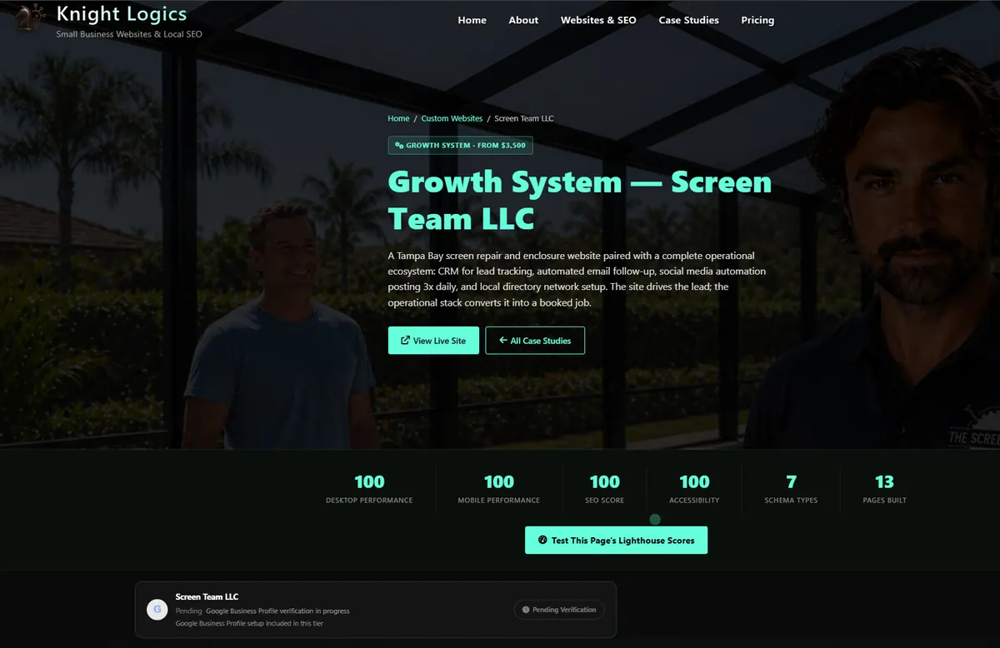
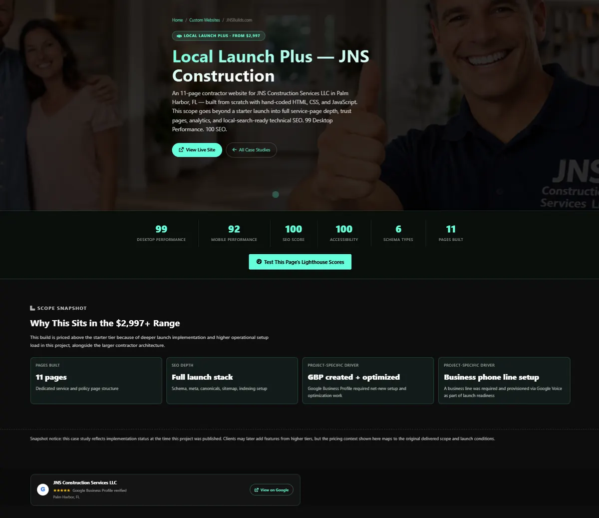
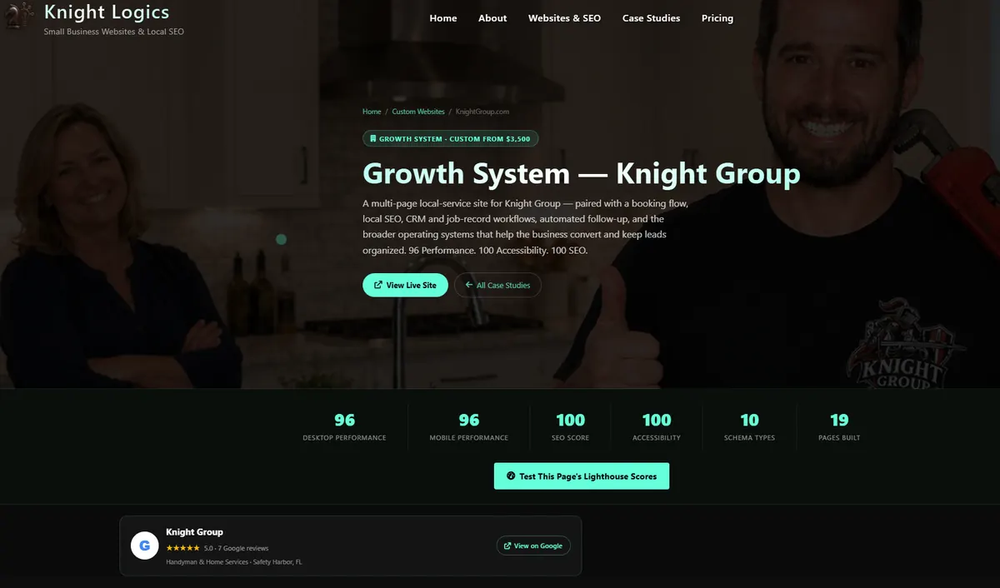

What Palm Harbor businesses actually need from a website
Palm Harbor sits in a local market where service businesses often pull leads from more than one nearby city. The site needs to be clear about what the business does, where it works, and why someone should call instead of bouncing back to the map pack. That usually means stronger service-page structure, better mobile speed, and cleaner local trust signals than most builder sites deliver.
The common failure point is not design taste. It is structure. Many local sites are slow, mix too many services onto one page, and barely connect the website to the Google Business Profile. That leaves rankings inconsistent and conversions weaker than they should be.
What separates stronger Palm Harbor sites from generic local builds
- Clear service architecture — dedicated pages for real services instead of one overloaded summary page that ranks for nothing specific.
- Fast mobile performance — local service searches skew mobile, so the CTA and trust signals need to load immediately.
- Accurate service-area relevance — Palm Harbor, East Lake, Ozona, Tarpon Springs, Dunedin, and surrounding North Pinellas intent should be reflected naturally where it helps.
- Schema and crawl clarity — Google should not have to guess what the business does, where it operates, or how the page fits the site.
- GBP alignment — the site and the Google Business Profile need to agree on services, categories, and geography or local visibility stalls.
Proof that the build quality is real
Knight Logics builds websites and growth systems for Tampa Bay businesses that need measurable technical quality, not just a nicer homepage. The work is live, testable, and built around the same local trust and search layers that Palm Harbor businesses need.

Screen Team LLC — Tampa Bay screen repair growth system with website, CRM, email automation, and a local directory layer built to support service-area visibility. See the case study →
JNS Construction — contractor build with strong service structure, FAQ schema, and a launch setup built to give local rankings a real head start. See the case study →
Knight Group — local service site focused on calls, estimate requests, and supporting business systems that reinforce real lead flow. See the case study →Why builder templates plateau in North Pinellas
Builder platforms can launch a site quickly, but they also impose the same performance overhead and structural limits on every project. In Palm Harbor, where local service businesses are competing across nearby-city searches and map pack clicks, that ceiling shows up fast.
Hand-coded sites make it easier to control page speed, metadata, canonicals, schema, and internal link structure. Those are the pieces that matter when a business needs to outrank slow templates and thin service pages in a smaller but still competitive local market.
Google Business Profile integration — the layer most local sites underuse
For Palm Harbor service searches, the Google Business Profile is usually part of the first impression. The website needs to support it with matching services, matching geography, and a clean conversion path after the click. When those assets drift apart, rankings and conversions both suffer.
Knight Logics treats Google Business Profile optimization as part of the same work as the site build — not a separate afterthought handled later.
The Palm Harbor visibility stack that compounds cleanly
For most Palm Harbor businesses, the fastest lift comes from tightening three layers together: the website structure, the local SEO layer, and the Google Business Profile plus review system. When those layers line up, local intent from nearby cities reinforces rankings instead of landing on a weak page foundation.
If you want the gaps scoped first, start with the free website audit. If the scope is already clear, review pricing or book a consultation.
Who builds the site
Nicholas Knight is the developer behind Knight Logics, based in Safety Harbor, FL. Every site is hand-coded directly, not delegated or templated. That keeps performance, structure, and local SEO decisions under one accountable owner.
The current package tiers range from lean launch sites to full Growth System builds with CRM, email automation, and supporting infrastructure. For many Palm Harbor service businesses, the Search-Ready Starter or Growth System tier is the most practical fit.
Frequently asked questions
What matters most for Palm Harbor local search?
Page speed, service-page clarity, GBP alignment, and real city/service-area relevance usually matter more than extra visual polish. The site needs to prove what the business does and where it works immediately.
Can rankings improve without a full rebuild?
Sometimes. If the technical base is still usable, local SEO cleanup and GBP alignment can move the needle. If the base is too slow or thin, rebuilding is usually the faster path.
How is Palm Harbor different from a broader Tampa page?
Palm Harbor intent is more tied to North Pinellas geography, nearby-city service areas, and local trust. The page should reflect that rather than reading like generic metro-wide copy.
How long does a Palm Harbor website build take?
Search-Ready Starters usually take 1 to 2 weeks. Full Growth System builds typically take 3 to 5 weeks depending on scope and integrations. Pricing and package details break that down further.
If your Palm Harbor site looks decent but isn’t pulling leads, start with the audit.
Knight Logics will review the structure, local trust layer, GBP alignment, and technical SEO before recommending any rebuild or cleanup work.